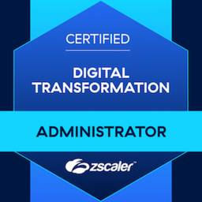
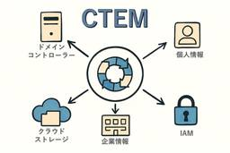
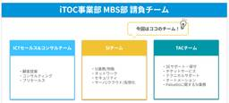
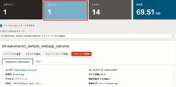
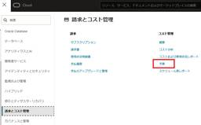

APC 技術ブログ
https://techblog.ap-com.co.jp/
株式会社エーピーコミュニケーションズの技術ブログです。
フィード

【OCI】ローカルピアリングゲートウェイを使用して異なるVCN間の接続をしてみた
APC 技術ブログ
はじめに こんにちは！クラウド事業部の志賀です。 学習の一環として、同一リージョン内にある異なるVCN間をプライベートに接続できる「ローカルピアリングゲートウェイ」について、実際に私が利用した際の感想と、設定完了までの手順を載せていきたいと思います。 ローカルピアリングゲートウェイとは 同じリージョン内の2つのVCNを接続し、プライベートIPアドレスを使用して通信できることです。 docs.oracle.com 設定前に気を付けること ピアリング接続するVCNは重複するCIDRを持つことができません。 実際に重複している場合、画像のようなエラーが出ました。 構成 今回はこちらの構成を作成して疎…
1日前

【AWS】【初心者向け】CloudFormationのドリフト検出機能
APC 技術ブログ
こんにちは、クラウド事業部の菅です。ClouFormationで作成したリソースが、手動などで変更されて困った経験はありませんか？スタックとリソースとで設定に差異が生じている状態は、トラブルの原因にもなります。AWSには、スタックとリソースとの設定の差異を検出する機能があります。今回は、CloudFormationのドリフト検出機能についてご紹介いたします。
1日前

【CTEM】XM Cyberを触ってみた！〜攻撃者視点のセキュリティ対策で企業を守る〜
APC 技術ブログ
CTEM（Continuous Threat Exposure Management：継続的脅威公開管理） と呼ばれる、継続的に、そして攻撃者の視点から自社のIT環境を評価し、リスクを管理していくアプローチが注目されています。この概念の実現を支援する有効な選択肢の一つが、今回ご紹介するXM Cyberです。
1日前

GitHub Advanced Security の概要を把握する
APC 技術ブログ
はじめに GitHub Advanced Security とは？ GitHub Secret Protection の概要 GitHub Code Security の概要 ライセンスの支払方法 おわりに ACS 事業部のご紹介 はじめに こんにちは。ACS 事業部の田中です。 Microsoft Build 2025 で大きな発表があった GitHub Copilot ですが、今最も注目を集めている GitHub のサービスであることは言うまでもないでしょう。 開発者の生産性を向上する「攻め」のソリューションとして、ますます目が離せません。 ただ、AI 駆動開発 によって開発生産性を向上し…
2日前

【Zscaler】Zscaler Digital Transformation Administrator(ZDTA) 合格体験記
APC 技術ブログ
Zscaler Digital Transformation Administrator(以下、ZDTA)の試験に合格したので学習方法や所感をお伝えします。
2日前

【CTEM】CTEM超入門：サイバー脅威を先読みし、戦略的に守る新常識
APC 技術ブログ
近年、サイバー攻撃はますます巧妙化し、企業を取り巻く脅威は日々変化しています。そんな中、セキュリティ対策の新たなアプローチとして注目されているのが CTEM (Continuous Threat Exposure Management) です。「CTEMって一体何？」そう思われた方もいるかもしれません。このブログでは、CTEMがなぜ今重要なのか、そしてどのように企業のセキュリティを強化するのかを、超入門レベルでわかりやすく解説します。
4日前

【日本初公開】 Paloalto PanoramaからSCM(Strata Cloud Manager) への移行手順
APC 技術ブログ
iTOC事業部 マネージドビジネスソリューション部の武居です。 APCの本社NWインフラの請負部隊とICTセールス&コンサルチームの責任者として、お客様へITインフラ周りの提案を行っております。 これまではICTセールス&コンサルチーム側を取り上げてきましたが、今回は請負チームの主軸であるSIチームの取り組みについてアップしたいと思います。 今回はPaloalto Networksのファイアウォール管理ツールであるPanoramaから、クラウドベースのSCM (Strata Cloud Manager) に移行を実施しました。 本記事では、その背景や移行の流れ、実際の感想について紹介します。 …
4日前

【OCI】OCIRで消してしまったイメージを48時間以内に取り戻す
APC 技術ブログ
はじめに エーピーコミュニケーションズ クラウドエンジニアリング部の佐久間です。 MyLearnを使ってOCIの学習を進めていく中で、コンテナとともに「OCIR」について学ぶ箇所があり、その中で「削除してしまったイメージは48時間以内であれば復旧することが出来ます」と説明があります。 「そうか！なるほど！」 と、頭で理解はしたかもしれませんが、実際にそのような状況になった時に、復旧させることは可能ですか？MyLearnでは復旧させるための記載が見当たらなかったため、以下を参照しながら復旧を試してみたいと思います。 docs.oracle.com 前提条件 OCIのMyLearnなどを読み、OC…
5日前

【OCI】ゼロからTerraformでコンピュートを作成してみる
APC 技術ブログ
目次 目次 はじめに この記事で分かること Terrafom実行環境の準備 OracleLinuxのTerraformインストールと認証設定 Terraformのインストール RSAキーの作成 Terraform設定ファイルの準備 リソースを作成 Terrformのステートファイル リソースへのSSHログイン リソースの削除 参考 まとめ おわりに はじめに こんにちは、エーピーコミュニケーションズの松尾です。 今回はTerraformを使ってOCIリソースを作成してみたいと思います。 検証用のコンピュートなど、毎回同じような設定で作成したい場合、毎回ブラウザから ポチポチするのは大変ですよね…
6日前

【OCI】Oracle Resource ManagerとGitHub ActionsでOCIリソースのデプロイを自動化
APC 技術ブログ
目次 目次 はじめに Oracle Resource Managerとは 前提 構成 手順 GitHub側の連携準備 Resource Manager 構成ソース・プロバイダの作成 Resource Manager スタック作成 Resource Manager スタック自動更新の仕組み実装 OCI CLIのセットアップ Secretの登録 ワークフロー定義ファイルのコミット 注意事項 自動更新の確認 おわりに お知らせ はじめに こんにちは。クラウド事業部 IaC技術推進部の西野です。 Git管理しているIaCファイルの更新に伴うデプロイを人手で行っている場合、 デプロイ忘れなどのヒューマン…
6日前
【OCI】CDK for TerraformをOCI環境で試してみた
APC 技術ブログ
はじめに こんにちは、クラウド事業部丸山です。 直近でOCIを触る機会があり、昨年はAWSでIaCの魅力に触れたため、OCI環境ではどのような方法でIaCが実現可能かをするのかということが気になったため試してみることにしました。 OCIでは基本としてはTerraformをベースとしてIaCが利用ができるようですが、残念ながら筆者はTerraformを利用した経験がありません。 学習コストを削減するべく、AWS CDKで学んだことが活かせるものがないかと探してみたところ、 CDK for Terraformというものを見つけましたためこちらを試してみることにしました。 www.oracle.co…
6日前

緊急速報 : Backstage Discordに Japanese チャネルが開設されました！！
APC 技術ブログ
緊急速報！！ 皆様、緊急速報速報です。 2025年5月15日、 Backstage Discord に #japaneseチャネル が開設されました！！ discord.gg 日本向けチャネルがあるといいなーと思っていたのですが、ついに開設です。 皆様ぜひ登録いただき、情報交換などさせていただければと思います。Backstageコミュニティを日本にも拡げていきましょう。 あらためて Backstageの情報ソース あらためまして。皆さんこんにちは。ACS事業部 亀崎です。 このブログでも様々な情報を提供してきております、Backstage。少しずつその存在が知られてきていると感じています。 も…
6日前

【OCI】ファイル・ストレージ・サービス(FSS)について
APC 技術ブログ
クラウド事業部の伊藤です。 先日、Oracle Cloud InfrastructureのArchitect Associateに合格しました。 そちらを勉強している中で、ファイル・ストレージ・サービスについてエクスポートやセキュリティリストの設定が 上手く理解できなかったので自分なりにまとめてみます。 今回は概要や主なコンポーネントをまとめた後、ハンズオンでファイル・ストレージサービスを少し触っていこうと思います。 概要 ファイル・ストレージ・サービスとは、複数のインスタンス間で共有可能なファイルストレージのマネージドサービスです。 インスタンスにアタッチして使用できるブロックボリュームも同…
8日前
【OCI】リソース・スケジューラーを使って、コンピュート・インスタンスを自動停止させる設定
APC 技術ブログ
はじめに こんにちは。クラウド事業部の箕輪です。 検証で使ったインスタンスを停止するのを忘れて、コストが跳ね上がってしまった！という経験はありませんか？ 従量課金制のサービスを利用する上で、クラウドコストの最適化は重要な課題の1つです。 特に開発環境やテスト環境といった常に稼働している必要のないリソースは、スケジュールに基づいて自動的に起動・停止させることで、大幅なコスト削減につながります。 そこで今回は、Oracle Cloud Infrastructure (OCI) の機能の一つである「リソース・スケジューラー」を設定して、 インスタンスの停止忘れを予防してみました。 リソース・スケジュ…
8日前
【OCI】OCI・AWS・Azureの自動スケーリングを比較してみた
APC 技術ブログ
はじめに こんにちは！クラウド事業部の宇野です。 Oracle Cloud Infrastructure 2024 Certified Architect Associateの資格を取得したことをきっかけに、Oracle Cloud Infrastructure（OCI）、AWS、Azureにおける自動スケーリングの違いを整理しました。 自動スケーリングとは？ 自動スケーリングは、需要に応じてコンピューティングリソースを動的に増減させる仕組みです。これにより、コスト効率と安定したパフォーマンスを両立できます。 OCIの自動スケーリング リソース スケーリング設定の基準 インスタンスプール CP…
8日前
【AWS】【初心者向け】カスタムメトリクスを使用してプロセス監視を実装する
APC 技術ブログ
こんにちは、クラウド事業部の菅です。今回は、カスタムメトリクスを使用してプロセス監視を実装してみたいと思います。
8日前
【OCI】ネットワーク・パス・アナライザを使ってみた
APC 技術ブログ
はじめに こんにちは！クラウド事業部の志賀です。 ネットワークのトラブルシューティングの1つである「ネットワーク・パス・アナライザ」を使用してみました。 通信トラブルに翻弄され、延々と続くリストとにらめっこする羽目に陥ったことはありませんか？ 今回は簡単にping疎通の確認で実施してみたので、その手順と結果を載せたいと思います。 ネットワーク・パス・アナライザとは ネットワーク・パス・アナライザは統合された直感的な機能で、接続性に影響する仮想ネットワーク構成の問題を識別するために使用できます。 docs.oracle.com 使用してみた結果と手順 今回は「test-VM」から「test-VM…
9日前
【OCI】なぜ今、OCIなのか？オンプレ・他クラウドと比較して見えた“本当のコストメリット”
APC 技術ブログ
はじめに：クラウド選定、価格だけで決めていませんか？ こんにちは、クラウド事業部の加藤です。 本日はOCIとオンプレ、その他クラウドのコストメリットを比較して紹介します。 クラウド移行が進む中で、多くの企業が「とりあえずAWS」「まずはAzure」と導入を進めてきました。しかし、いざ本格運用に入ると、想定以上のコストや想定外の運用負荷に直面するケースも少なくありません。 本記事では、オンプレミス環境と主要クラウド（AWS/Azure）と比較しながら、Oracle Cloud Infrastructure（OCI）ならではの“本当のコストメリット”に焦点を当ててご紹介します。特にOracleワー…
9日前
【OCI】LPG？DRG？RPC？ 手を動かしながら理解を深めよう！
APC 技術ブログ
はじめに エーピーコミュニケーションズ クラウドエンジニアリング部の佐久間です。 OCIの学習を進めていく中で「ローカルピアリングゲートウェイ」、「動的ルーティングゲートウェイ」、「リモートピアリング接続」と出てくる箇所がありますが、似たような名前、似たような機能であり、実際の構成、機能を把握するのに時間が掛かったため、手を動かしながら理解を深めていきました。 詳細までは記載していませんが、自分が手を動かした内容を掲載しますので、 同じところで躓いている 理解を深めようとしている これから資格取得を目指している 上記のような方は、ぜひ一緒に手を動かしながら読んで頂けると幸いです。 前提条件 O…
9日前
Backstageに入門してみよう：02_PostgreSQLとの接続とGitHub Integrationの実装
APC 技術ブログ
以前の記事では、 Backstage を開発するための環境構築の手順から、実際に開発モードで Backstage インスタンスを起動するところまでを行いました。 本記事では、ローカル環境で起動した PostgreSQL を Backstage と接続する手順と、 GitHub Integration 機能を用いたユーザー認証機能の実装方法について説明します。
10日前
Databricks におけるカラムマスキング機能の使い方
APC 技術ブログ
GLB事業部Lakehouse部の林（リン）です。今回はデータブリックスのデータマスキング機能を紹介したいと思います。 はじめに Part 1: 前提条件と制限 Workspace Prerequisite User Prerequisite Compute Requirement Part 2: マスキング関数の適用方法 Step 1 関数実行者権限の設定 Step 2 関数の作成 Part 3: 注意点 1. タイムトラベル機能が使えなくなります。 2．下流テーブルはマスク関数を継承しません。 Part 4: シナリオに応じた機密資料の処理方法 マスキングしない場合 マスキングする場合 1…
10日前
プラットフォームエンジニアリング：Azureで安全なAI駆動開発について考えてみる
APC 技術ブログ
こんにちは、ACS事業部の折田です。 先月入社し、今回が初めての技術ブログ投稿となります。 最近、AI駆動開発が話題ですね。先日のGlobal AzureでもGitHub Copilotのハンズオンが実施され、これからますますAI駆動がエンジニアの日常となっていくでしょう。 しかし、企業によってはGitHub Copilot自体が使用不可なケースもあります。その際に安全にAI駆動開発を行うにはどうすればいいでしょうか。今回はAzure上で安全にAI駆動開発を行う方法を考察してみました。 まだ机上での考察なので、保証は致しかねますが、参考になれば幸いです。 安全なAI駆動開発の構成 設計のポイン…
10日前
【OCI】OCI・AWS・Azureの主要サービス／用語比較
APC 技術ブログ
目次 目次 はじめに どんなひとに読んで欲しい OCI、AWS、Azure 類似サービス表 コンピューティング ストレージ データベース ネットワーキング その他 OCI、AWS、Azure 概要用語比較 まとめ おしらせ はじめに こんにちは、クラウド事業部の大竹です。 先日 OCI Architect Associate (2024) に無事合格しました。 OCIより先にAzureとAWSに触れていたので、OCIについて学習を開始するにあたり、「このOCIのサービスは、Azure・AWSだと何に当たるの？」ということを理解しようと思い、簡単にまとめました。 ※各社のサービス毎に違いがありま…
11日前
眠れなくなるほど面白い暗号化技術 第2回 - 300年間暗号学者を欺き続けた魔法の表
APC 技術ブログ
はじめに こんにちは、クラウド事業部の丸山です。 前回のシーザー暗号はいかがでしたか？ 単純ながらも暗号の基本概念を学ぶ絶好の入門編でしたね。 しかし歴史的に見れば、シーザー暗号の致命的な弱点はすぐに明らかになりました。 文字の出現頻度を分析するだけで簡単に解読できてしまうのです。 そこで今回は、この弱点を巧妙に克服した「ヴィジュネル暗号」のをご紹介します。 16世紀に考案されたこの暗号は、なんと300年もの間「解読不能な暗号」として君臨し、 「le chiffre indéchiffrable」（解読不能の暗号）という異名まで与えられました。 一体どのような仕組みが、当時の最高の頭脳たちをこ…
13日前
【OCI】バックアップ？コピー？OCIのバックアップとクローンを使い分けよう！
APC 技術ブログ
はじめに こんにちは。クラウド事業部 IaC技術推進部の飯島です。 OCIでインスタンスを使っていると「バックアップを取りたい」「別の環境に複製したい」というシーンが出てきます。そこで出てくる「バックアップ」と「クローン」。一見似ていますが、目的や挙動が異なります。 本記事では、それぞれの違いと使い分けのポイントを紹介します。 本記事の前提 本記事では「ブロック・ストレージ」におけるバックアップとクローンに触れていきます。 「ブロック・ストレージ」の他にも「オブジェクト・ストレージ」と「ファイル・ストレージ」がありますが、本記事では触れません。 ブロック・ストレージの種類 ブロック・ストレージ…
13日前
【AWS】【初心者向け】CloudFormationでスクリプトから簡単にSSMドキュメントを作成する
APC 技術ブログ
こんにちは、クラウド事業部の菅です。以前、CloudFormationでSSMドキュメントを作成したことがあったのですが、テンプレートファイルの作成で困ったことがありました。CloudFormationでSSMドキュメントを作成する場合、スクリプトを文字型配列として定義する必要があります。この、スクリプトを文字型配列として定義する作業を、少ない作業量かつ管理しやすい形式で行うために試行錯誤しましたのでご紹介します。
15日前
【OCI】 Oracle Cloud Infrastructureの特徴・使い方・注意点をサクッとまとめてみた
APC 技術ブログ
はじめに こんにちは、クラウド事業部の葛城です。 今回は、Oracle Cloud Infrastructure（OCI）の「Architect Associate」資格に合格したことを報告しつつ、OCIについての情報をまとめてみました。 実際に環境を触って試したかったのですが、通常15分ほどで払い出されるOCI Free Tierのアカウントが、登録は完了したものの「アカウント審査待ち」のメールが届き、まだ環境を実際に触ることができていません。 そこで今回は、実際にOCIを利用している方々のブログを参考に、 OCIってどんなクラウド？ どんな使い方ができるの？ 注意点は? といった基本的な特…
16日前
【見学レポート】Japan IT Week@2025春展へ行ってきました！
APC 技術ブログ
こんにちは。エーピーコミュニケーションズ MBS部 ICTセールス＆コンサルチームの関口と申します♪ 先日、最新のIT技術や製品の情報収集としてチームメンバー４名で「Japan IT Week」に行ってまいりました。本記事では参加したカンファレンスの内容と感想を簡単にまとめました。また、会場の雰囲気も合わせてお伝えできればと思っておりますのでお気軽に読んでいただけますと幸いです！ そもそもJapan IT Weekとは？ 【公式】Japan IT Weekwww.japan-it.jp 参加した目的 ブース会場の雰囲気 カンファレンス参加レポート ★顧客起点のマーケティング 講演内容 感想 ★…
17日前
【OCI】AWSと比較して分かるOCIの強み3選
APC 技術ブログ
目次 目次 はじめに この記事で分かること OCIが優れている点3つ 1.低コスト コンピュートサービス ストレージ ネットワーク 2.ソブリンクラウド対応 3.VMwareワークロードのルート権限 まとめ 関連記事 おわりに はじめに こんにちは、エーピーコミュニケーションズの松尾です。 OCIのおすすめポイントをAWSと比較する形で3つ、紹介したいと思います！ AWSも使ってきた私の独断と偏見です。 この記事で分かること OCIがAWSより優れているポイント3つ OCIが向いているユースケースが何か OCIが優れている点3つ 私のおすすめ順に紹介します。 1.低コスト 2.ソブリンクラウド…
17日前
【OCI】Oracle Cloud Free Tierに登録から初回ログインまでしてみた
APC 技術ブログ
はじめに こんにちは！クラウド事業部の志賀です。 Oracle Cloudの学習のために今回「Oracle Cloud Free Tier」に登録してみました！ この記事では、私が実際に登録した経験をもとにその方法をお伝えします。 「Free Tierを使いたいけど、登録の仕方が良くわからない」という方に向けて、登録時の手順と画面を載せているので、参考になれば幸いです。 Oracle Cloud Free Tierとは Oracleが提供するクラウドサービスの無料利用枠です。これからクラウドを学びたい方や、Oracle Cloudの機能を試してみたい方が、無償で一定のサービスを利用できます。 …
17日前